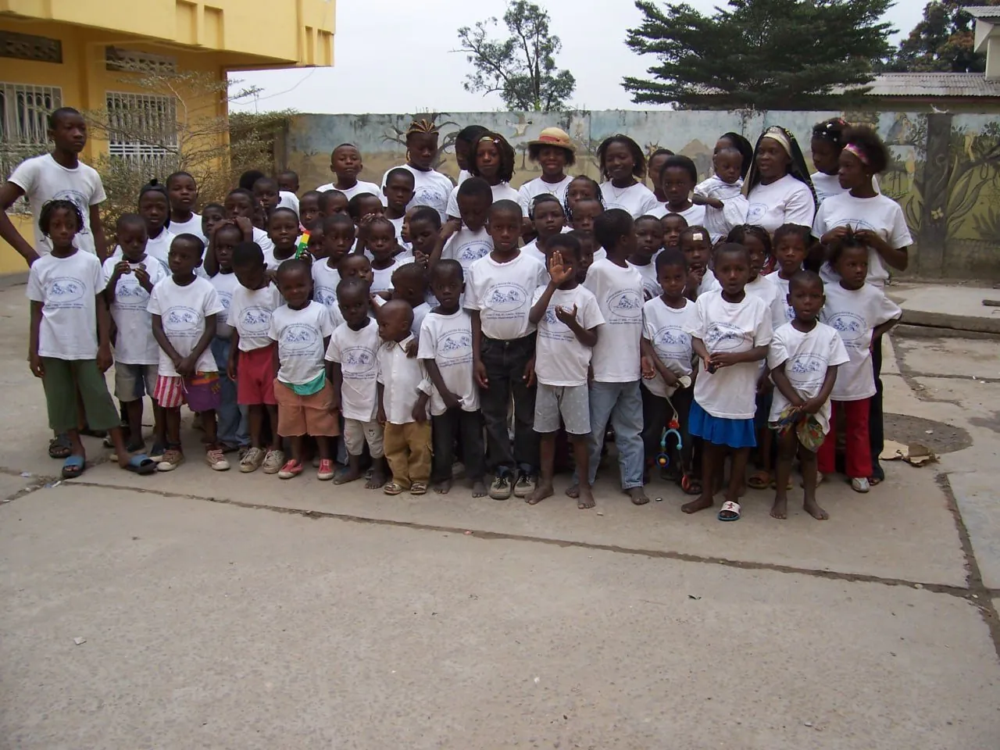
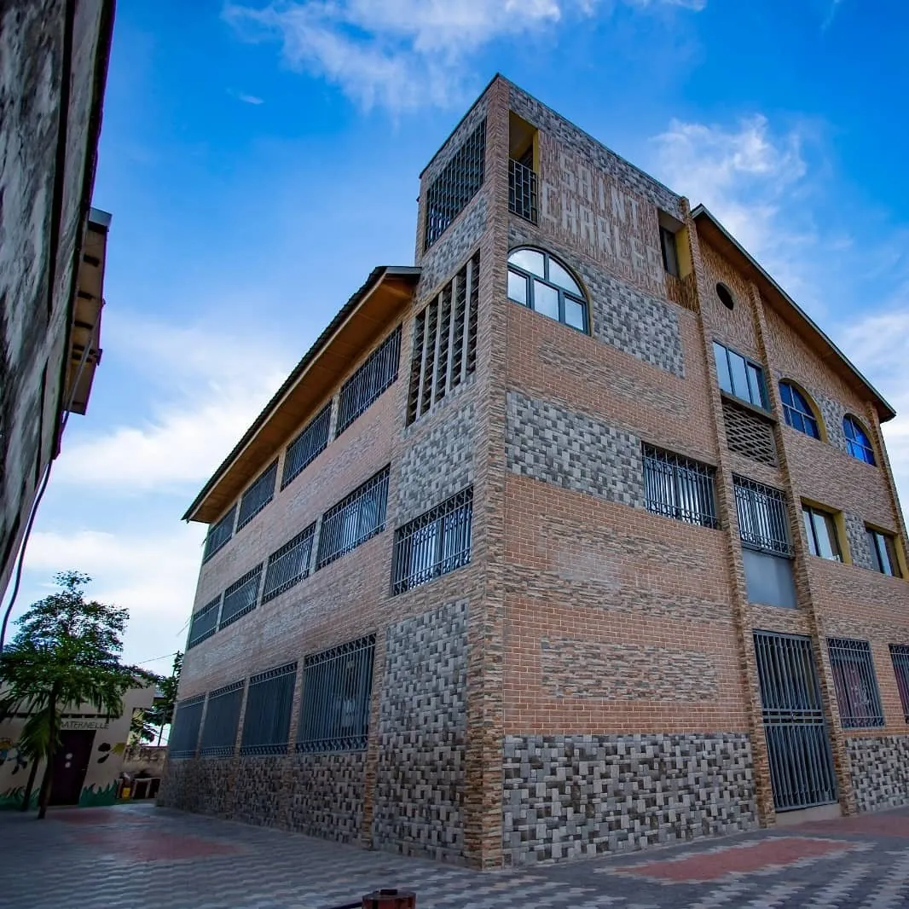
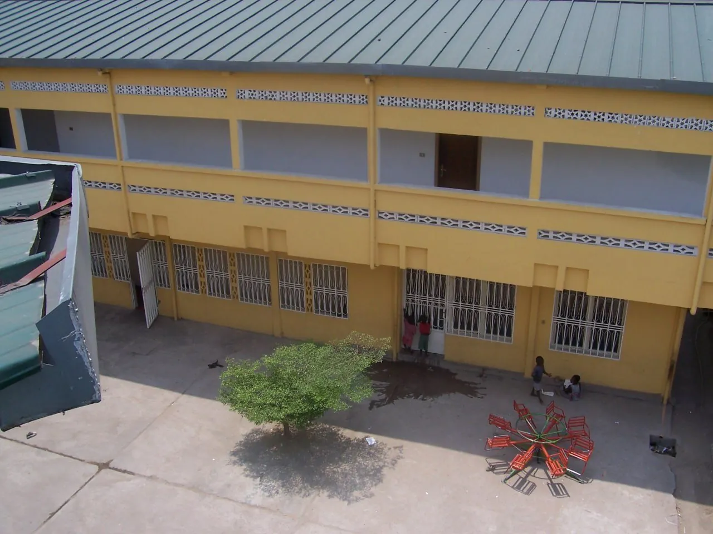

Protéger l'avenir, Construire une vie
Bienvenue au Foyer de l’Enfant Jésus. Un cadre familial et chaleureux pour loger, nourrir, soigner et scolariser des enfants en RDC.
Les Piliers du Quotidien
Éducation intégrale
Une éducation de qualité pour les enfants du foyer et du quartier, favorisant l’excellence académique dès le plus jeune âge.
En savoir plusVie au Foyer
120 enfants accueillis, 3 repas équilibrés par jour et une équipe professionnelle dévouée pour assurer leur bien-être quotidien.
150 Enfants
19 Mentors
Éducation spirituelle
Transmission des valeurs de paix, de pardon et de fraternité à travers la prière et la messe quotidienne au sein de notre communauté.
Nos valeursLes chiffres clés de l'orphelinat
150
CAPACITÉ D’ACCUEIL
100%
SCOLARISÉS
19
ÉDUCATEURS
3
REPAS/JOUR
Le Quotidien au Foyer

Les enfants de l'orphelinat

La chapelle de l'Orphelinat

L'école Saint-Charles

l'orphelinat Maison Enrica
Participer à leur avenir dès aujourd'hui
Chaque geste compte. Votre soutien financier ou matériel permet à plus de 150 enfants de bénéficier d'une éducation, de soins de santé et d'un toit sécurisé.